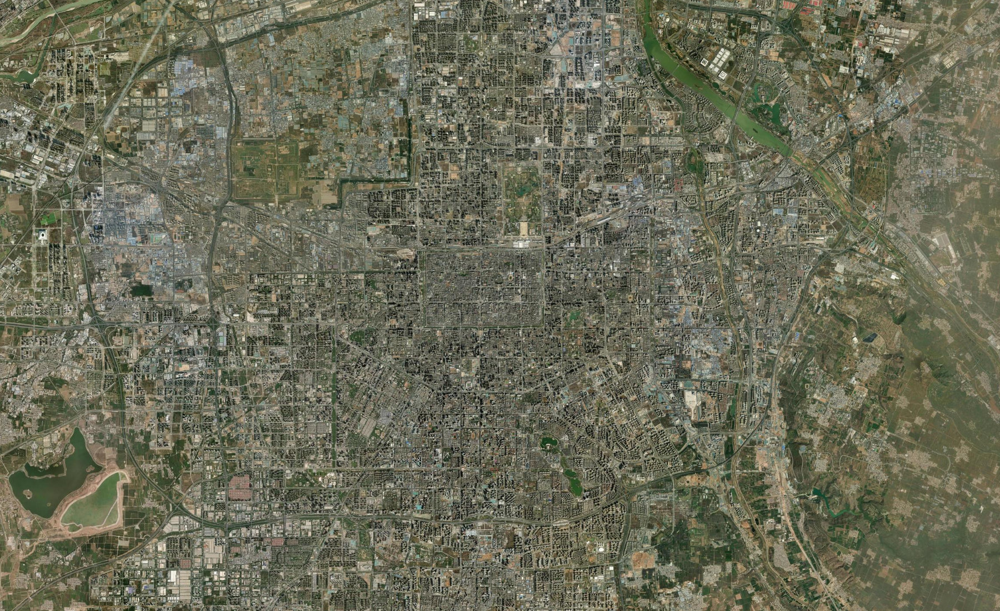
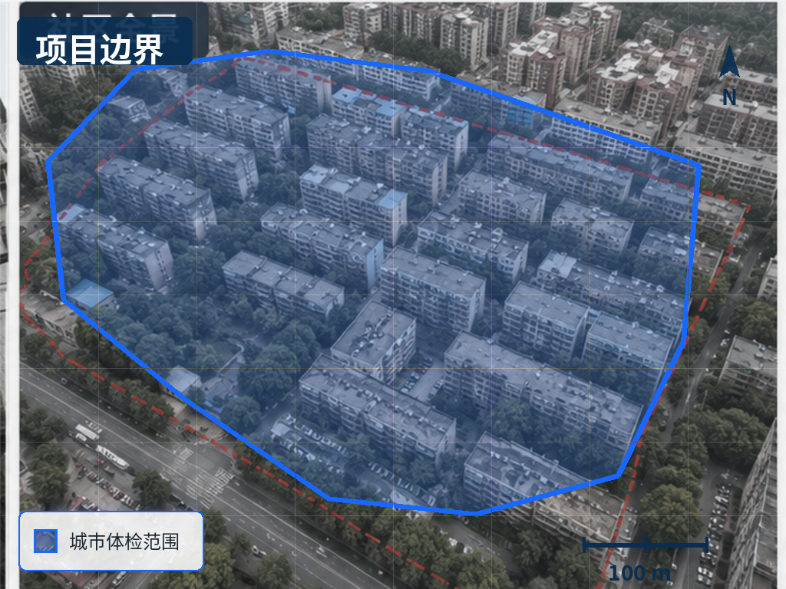
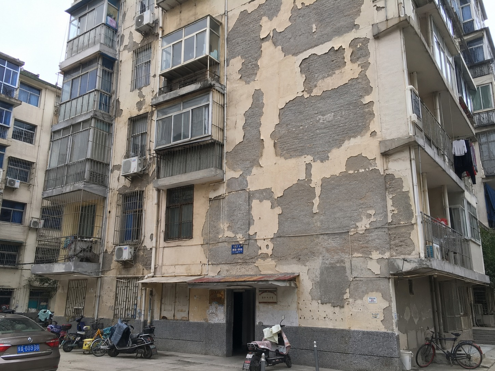

100%
当前视图 / CITY PROJECT OVERVIEW
西安市城市更新项目总览

原始定位174 / 186，识别到12张缺失定位照片。


当前筛选位置1 / 7 · 全部任务
当前选中MAP-021
项目问题、8类GIS基础图层与周边空间事实已完成关联，等待进入下一阶段。
IMG-XA-001本地影像证据 · 未使用在线资源
规则性质Demo预置核算规则
基线结果只读 · Demo预置规则 V1.0
锁定基线结果已经恢复，情景模拟仅用于方案推演，不覆盖正式基线。
01—06全流程已完成，Demo报告成果已生成。